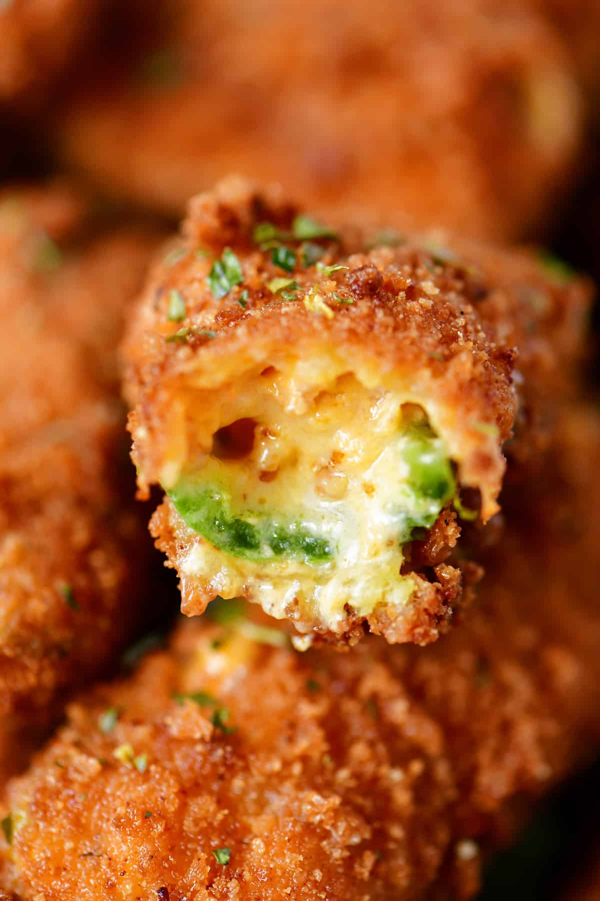

Jalapeno Poppers

Ultimate Jalapeno Poppers
Crispy on the outside with melted cheese and bacon on the inside.
Ingredients:
- 18 jalapenos, seeded and sliced in half
- 8 oz cream cheese, softened
- 2 cup shredded pepper jack cheese
- 1/4 cup chopped bacon bits
- 2 tbsp sriracha sauce
- 1 cup all purpose flour
- 1 cup panko bread crumbs
- 1 cup plain bread crumbs
- 1 tsp garlic powder
- 1/2 tsp cayenne pepper
- 1/4 tsp black pepper
- 1/4 tsp salt
- 6 eggs, beaten
- peanut oil or canola oil for frying
Instructions:
- Mix together the cream cheese, shredded pepper jack cheese, bacon bits, and sriracha sauce.
- Spoon cheese mixture into jalapenos halves.
- Put the flour into one bowl and the beaten eggs in a second bowl.
- In the third bowl, combine the panko bread crumbs, plain bread crumbs, garlic powder, cayenne pepper, black pepper, and salt.
- Dip the stuffed jalapenos halves in the beaten eggs and then coat with flour. Dip in the beaten eggs again and then coat with the bread crumbs mixture.
- Heat oil in a deep fryer (or a large pot with a thermometer) to 375˚F. Fry a few jalapenos poppers at once, for 2-3 minutes, until golden brown.
- Drain on a paper towel lined plate.